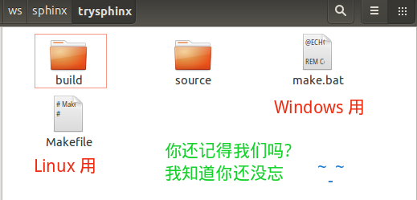
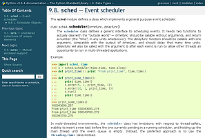
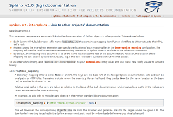

2.2. Sphinx简明教程¶
What is Sphinx¶
Sphinx 是种令人可以轻松撰写出优美文档的工具, 由 Georg Brandl 在BSD 许可证下创造, 它允许开发人员以纯文本格式编写文档, 以便采用满足不同需求的格式轻松生成输出. 这在使用 Version Control System 追踪变更时非常有用. 纯文本文档对不同系统之间的协作者也非常有用. 纯文本是当前可以采用的最便捷的格式之一.
虽然 Sphinx 是用 Python 编写的, 并且最初是为 Python 语言文档而创建, 但它并不一定是以语言为中心, 在某些情况下, 甚至不是以程序员为中心. Sphinx 有许多用处, 比如可以用它来发布你的项目文档, 或编写整本书！
Sphinx官网：http://www.sphinx-doc.org/en/stable/, 就是采用reStructuredText标记语言撰写, Sphinx发布的.
Why Sphinx¶
Sphinx具有以下亮点：
- 丰富的输出格式：HTML（包括Windows HTML Help）, LaTex（用于可打印PDF）, epub, Texinfo, manual pages, plain text
- 完备的交叉引用：语义化的标签, 并自动链接函式、类、引文、术语以及类似片段信息
- 明晰的层级结构：轻松定义文档树, 并自动化链接同级/父级/下级文章
- 美观的自动索引：自动生成索引以及特定语言模块的索引
- 精确的语法高亮: 基于 Pygments 自动语法高亮
- 开方的扩展: 支持代码片段的自动测试, 从Python模块的文档字符串包含（API文档）, 参考 more
- 用户贡献的扩展: 用户提供的 大约50个扩展,大多可以通过PyPI安装
- 强大简洁的书写语言: 使用 新结构化文本(reStructuredText) 作为标记语言.
安装Sphinx¶
Sphinx的安装很简单, 只需通过 pip 或 easy_install 安装, 且支持Windows, Linux, Mac等系统. 下面详细介绍Windows, Linux系统下Sphinx的安装.
依赖¶
Sphinx需要以下依赖工具:
- Python 2.4及以上版本
- docutils 0.5及以上版本库
- jinjia2库
- Pygments库
不用担心, 这些依赖库会自动安装的, 如果没有请自行安装.
Linux系统¶
由于Linux系统中都会自带有Python, 故可以直接在终端 ( Ctrl + Alt + T 快捷键打开终端) 通过 pip 命令安装:
$ pip install Sphinx
Attention
安装过程需要连接网络, 请确保网络畅通!
Windows系统¶
Windows系统中一般不会自带Python, 需要用户自行安装, 首先安装Python和pip, 然后通过pip安装Sphinx即可.
- 安装Python和pip
目前Python最新版本为 Python 3.5.1 , 可到 Python官网 下载安装即可, 该版本已经包含pip, 无需再安装pip.
- 安装Sphinx
打开命令提示符 ( 运行 --> cmd 或 所有程序 --> 附件 --> 命令提示符 ), 输入如下命令
pip install Sphinx
Attention
安装过程需要连接网络, 请确保网络畅通!
使用Sphinx¶
手册文档¶
- Sphinx官网英文手册
- Sphinx 1.3.1 中文手册 (推荐查看)
- 使用sphinx记笔记 (中文)
- 用Sphinx写书
Hint
这些文档大部分都是用Sphinx发布的, 可以下载HTML, PDF, epub查看.
你可以查看 Sphinx初尝 来学习, 也可以跟着我一起动起来!
一起动起来吧¶
由于Sphinx是跨平台的, 其在Windows上和Linux上的用法相同, 故以Linux系统下Sphinx为例.
本节旨在让大家了解如何快速使用Sphinx, 故较为精简, 详细的问题请自行查阅手册.
配置文档资源¶
在你的磁盘里新建一个工作目录, 比如我在用户主目录下的 ws 文件夹中建立了个 sphinx 目录, 又在其中建立了一个 trysphinx 目录用于本次演示, 即 ws/sphinx/trysphinx , 然后切换到此目录并启动 sphinx 以创建并配置工程, 整个过程命令表示如下 (注意: 仅输入终端命令提示符 $ 后面的代码)
$ mkdir ws/sphinx/trysphinx
$ cd ws/sphinx/trysphinx
$ sphinx-quickstart
之后进入文档资源配置对话框, 比如询问的第一项是 文档的根目录, 由于现在处于根目录, 所以使用**默认的当前目录 [.]**, 即直接回车即可; 询问的第二项是*你想把构建的最终文档目录放在哪*, 是放在”source”里创建成”_build”, 即 trysphinx/source/_build , 还是放在根目录里创建成”build”, 即 trysphinx/build , 我选择后者, 所以输入 y. 如下图所示:
{kind=link}
询问的第四项为工程名字, 比如就叫: “Try Sphinx”, 那么就输入它, 接下来输入作者名字, 我就填 iridescent 了哈; 紧接着是工程版本, 以及发布版本; 然后是选择文档语言, 打开提供的链接 (http://sphinx-doc.org/config.html#confval-language) 查看找到”zh_CN – Simplified Chinese”, 所以输入 zh_CN. 接着还会有很多配置询问, 你可以采用默认, 但建议仔细读一下, 有些是可以通过修改”conf.py”文件再修改, 有些就不可以.
Note
如果你想修改 conf.py 文件, 参考官方文档吧: http://www.sphinx-doc.org/en/stable/config.html
我采用了下面的配置
$ sphinx-quickstart
Welcome to the Sphinx 1.5a0 quickstart utility.
Please enter values for the following settings (just press Enter to
accept a default value, if one is given in brackets).
Enter the root path for documentation.
> Root path for the documentation [.]:
You have two options for placing the build directory for Sphinx output.
Either, you use a directory "_build" within the root path, or you separate
"source" and "build" directories within the root path.
> Separate source and build directories (y/n) [n]: y
Inside the root directory, two more directories will be created; "_templates"
for custom HTML templates and "_static" for custom stylesheets and other static
files. You can enter another prefix (such as ".") to replace the underscore.
> Name prefix for templates and static dir [_]:
The project name will occur in several places in the built documentation.
> Project name: Try Sphinx
> Author name(s): iridescent
Sphinx has the notion of a "version" and a "release" for the
software. Each version can have multiple releases. For example, for
Python the version is something like 2.5 or 3.0, while the release is
something like 2.5.1 or 3.0a1. If you don't need this dual structure,
just set both to the same value.
> Project version: 0.1
> Project release [0.1]:
If the documents are to be written in a language other than English,
you can select a language here by its language code. Sphinx will then
translate text that it generates into that language.
For a list of supported codes, see
http://sphinx-doc.org/config.html#confval-language.
> Project language [en]: zh_CN
The file name suffix for source files. Commonly, this is either ".txt"
or ".rst". Only files with this suffix are considered documents.
> Source file suffix [.rst]:
One document is special in that it is considered the top node of the
"contents tree", that is, it is the root of the hierarchical structure
of the documents. Normally, this is "index", but if your "index"
document is a custom template, you can also set this to another filename.
> Name of your master document (without suffix) [index]:
Sphinx can also add configuration for epub output:
> Do you want to use the epub builder (y/n) [n]: y
Please indicate if you want to use one of the following Sphinx extensions:
> autodoc: automatically insert docstrings from modules (y/n) [n]: y
> doctest: automatically test code snippets in doctest blocks (y/n) [n]: y
> intersphinx: link between Sphinx documentation of different projects (y/n) [n]: y
> todo: write "todo" entries that can be shown or hidden on build (y/n) [n]: y
> coverage: checks for documentation coverage (y/n) [n]: y
> imgmath: include math, rendered as PNG or SVG images (y/n) [n]: n
> mathjax: include math, rendered in the browser by MathJax (y/n) [n]: y
> ifconfig: conditional inclusion of content based on config values (y/n) [n]: y
> viewcode: include links to the source code of documented Python objects (y/n) [n]: y
> githubpages: create .nojekyll file to publish the document on GitHub pages (y/n) [n]: y
A Makefile and a Windows command file can be generated for you so that you
only have to run e.g. `make html' instead of invoking sphinx-build
directly.
> Create Makefile? (y/n) [y]: y
> Create Windows command file? (y/n) [y]: y
Creating file ./source/conf.py.
Creating file ./source/index.rst.
Creating file ./Makefile.
Creating file ./make.bat.
Finished: An initial directory structure has been created.
You should now populate your master file ./source/index.rst and create other documentation
source files. Use the Makefile to build the docs, like so:
make builder
where "builder" is one of the supported builders, e.g. html, latex or linkcheck.
Note
其中, 最后两项询问是否创建”Makefile”文件和”Windows command file”, 选择是( y ), 因为这样, 只需在终端简单执行 make target 来编译生成目标格式文档, 如 make html 生成静态网页文件, 你现在就可以这样做了! 不过还是等等吧, 先看看 sphinx-quickstart 都干了啥吧!
打开你的根目录, 你会看到:
我知道你想看看 build 目录, 可现在里面确实啥都没有, 看看 source 目录吧:
是不是想看看 index.rst 里藏着写什么, 那么你看吧, 下面就是:
好配置已经结束了, 我想你一定迫不及待地想看看生成的文档效果吧, 那就一起来构建文档吧!
构建文档¶
啊!!! 不是吧, 就这么点东西能干啥, 太小了吧, 是啊, 难道不好吗, 我知道你现在一定想知道这能不能生成静态网站, 是的, 那就在终端 [1] 输入 make html , 你看到了这些:
我想, 你知道去哪找了, 是的, build 目录, 快去打开看看吧 ( build/html/index.html ) !
我知道现在你在想: 我都能make出来什么呢? 是的, 我也好奇, 终端输入 make 看看吧
Please use `make <target>' where <target> is one of
html to make standalone HTML files
dirhtml to make HTML files named index.html in directories
singlehtml to make a single large HTML file
pickle to make pickle files
json to make JSON files
htmlhelp to make HTML files and a HTML help project
qthelp to make HTML files and a qthelp project
applehelp to make an Apple Help Book
devhelp to make HTML files and a Devhelp project
epub to make an epub
epub3 to make an epub3
latex to make LaTeX files, you can set PAPER=a4 or PAPER=letter
latexpdf to make LaTeX files and run them through pdflatex
latexpdfja to make LaTeX files and run them through platex/dvipdfmx
text to make text files
man to make manual pages
texinfo to make Texinfo files
info to make Texinfo files and run them through makeinfo
gettext to make PO message catalogs
changes to make an overview of all changed/added/deprecated items
xml to make Docutils-native XML files
pseudoxml to make pseudoxml-XML files for display purposes
linkcheck to check all external links for integrity
doctest to run all doctests embedded in the documentation (if enabled)
coverage to run coverage check of the documentation (if enabled)
是不是突然发现了好多, 多到你都不知道选哪个了, 没事, 常用的就 HTML, PDF, epub 等等那几个, 不过你也可以把这些都给大家提供, 没人会阻拦你, 而且你可能还会遇到点小麻烦, 不过我相信你也不太想这样做!
自动构建并预览文件¶
如果你觉得如果能自动打开编译好的文件预览就更好了, 这个是可以的, 真的吗？是的, 真的！
以 编译预览HTML文件为例 , 假设我们用Google Chrome预览.
对于Windows系统:
- 首先找到你的浏览器可执行主文件目录, 把它添加到系统环境变量
PATH中去
计算机 --> 系统 --> 高级系统设置 --> 高级 --> 环境变量 --> 系统变量里找到path双击打开, 在最前面添加:C:\Program Files (x86)\Google\Chrome\Application;(注意你的浏览器路径)- 打开 make.bat 文件, 在末尾
:end后追加代码(Ctrl + End快捷键可以跳到文件末尾), 即:
:end REM ---------------------------------------------- REM Added by Zhi Liu - Auto open build file REM ---------------------------------------------- if "%1" == "html" ( chrome build/html/index.html )
- 首先找到你的浏览器可执行主文件目录, 把它添加到系统环境变量
对于Linux系统:
打开 Makefile 文件, 按如下代码所示, 添加对应代码, 注意自己的浏览器名称:
.PHONY: html html: $(SPHINXBUILD) -b html $(ALLSPHINXOPTS) $(BUILDDIR)/html @echo @echo "Build finished. The HTML pages are in $(BUILDDIR)/html." # -------------------------------------------------------------- # Added by Zhi Liu - auto open html google-chrome buil/html/index.html # --------------------------------------------------------------
撰写文档¶
我知道, 你发现你的文档没啥内容啊! 你突然感觉要写点什么了, 要不然空空的给谁看谁会看呢? 那就开始学习 reStructuredText 吧, 请移步 reStructuredText简明教程 .
使用主题¶
如果你觉得生成的HTML不符合你的审美观, 请参考手册 HTML theme support 部分, 里面会详细介绍, 这里只简单介绍主题的更换.
Sphinx自带主题¶
可供选的内置主题有: basic, alabaster, sphinx_rtd_theme, classic, sphinxdoc, scrolls, agogo, traditional, nature, haiku, pyramid, bizstyle, epub. 下面给出几个主题的效果, 更多参见: HTML theming support .

alabaster |

classic |
| 
haiku |

sphinx_rtd_theme |
使用readthedocs主题¶
Read the Docs 提供项目文档托管服务, 不过这里只是使用其提供的主题.
- 终端输入
pip install sphinx_rtd_theme安装readthedocs主题 - 然后修改
conf.py文件:
首先在文件开头导入主题包
# for using Read the Docs theme
import sphinx_rtd_theme
然后修改 html_theme 和 html_theme_path 的值
# html_theme = 'sphinxdoc'
html_theme = 'sphinx_rtd_theme'
#html_theme_path = []
html_theme_path = [sphinx_rtd_theme.get_html_theme_path()]
- 最后终端执行
make html即可, 效果图如下：
生成不同格式的文档¶
生成html静态网站文件¶
进入Sphinx工程根目录, 直接终端运行： make html 即可在 build/html 目录中看到生成的静态网站文件, 双击首页html文件即可打开浏览.
See also
如果文档含有中文, 且需要中文搜索功能, 请参考 中文分词问题 .
生成epub文档¶
进入Sphinx工程根目录, 直接终端运行： make epub 即可在 build/epub 目录中看到生成的epub文件.
See also
如果文档含有中文, 且需要中文搜索功能, 请参考 中文分词问题
Sphinx重要扩展介绍¶
问题集锦¶
源编码¶
在reST使用Unicode字符可以容易的包含特殊字符如破折号, 版权标志.
Sphinx 默认源文件使用UTF-8 编码; 你可以通过修改 conf.py 文件的 source_encoding 的配置值改变编码.
中文文档问题¶
在使用Sphinx发布**中文文档**生成LaTex或PDF文件时, 会发现报出如下类似错误
! Package inputenc Error: Unicode char \u8:引 not set up for use with LaTeX.
这是因为, Sphinx默认使用 pdflatex 编译文档, 而要让 latex 支持中文, 需要包含一些中文包. 最好的解决方案是使用 xelatex 编译引擎并包含 CTEX 包, 只需要修改两个文件：
- 修改
conf.py文件（约220行）
添加如下代码, 使得程序自动在latex文件的导言区加入包引用
# -- Options for LaTeX output ---------------------------------------------
latex_elements = {
# The paper size ('letterpaper' or 'a4paper').
#'papersize': 'letterpaper',
# The font size ('10pt', '11pt' or '12pt').
#'pointsize': '10pt',
# Additional stuff for the LaTeX preamble.
#'preamble': '',
# Latex figure (float) alignment
#'figure_align': 'htbp',
# Using Package for ZH
'preamble' : r'''
\usepackage{ctex}
''',
}
添加的代码为 # Using Package for ZH 下面的三行, 然后保存.
- 修改
Makefile文件（约142行）
添加如下代码中的第5行代码, 即可更改编译引擎为xelatex
.PHONY: latexpdf
latexpdf:
$(SPHINXBUILD) -b latex $(ALLSPHINXOPTS) $(BUILDDIR)/latex
@echo "Running LaTeX files through pdflatex..."
sed -i s/pdflatex/xelatex/ $(BUILDDIR)/latex/Makefile
$(MAKE) -C $(BUILDDIR)/latex all-pdf
@echo "pdflatex finished; the PDF files are in $(BUILDDIR)/latex."
修改后保存, 然后终端运行 make latexpdf 即可看到PDF成功生成的提示, 在 build/latex 文件夹中可以找到.
中文分词问题¶
Sphinx原生只支持英文搜索, 参考 让sphinx支持简体中文搜索的插件 , 来实现中文搜索的支持, 下载插件并安装, 具体过程如下：
安装结巴分词, Linux：
sudo pip install jieba, Windows：pip install jieba复制文件
zh_CN.py到sphinx的search目录下, Linux：/usr/lib/python2.7/dist-packages/sphinx/search, Windows：C:\Python27\Lib\site-packages\sphinx\search打开
search目录下的__init__.py文件, 找到代码, 添加对中文的支持：from sphinx.search import en, ja languages = { 'en': en.SearchEnglish, 'ja': ja.SearchJapanese, } 修改成： from sphinx.search import en, ja, zh_CN languages = { 'en': en.SearchEnglish, 'ja': ja.SearchJapanese, 'zh_CN': zh_CN.SearchChinese }修改 conf.py 文件, 将语言设置成
language = 'zh_CN', 保存然后重新编译make html即可.
关于CJK支持请参考: CJK支持 .
中文乱码问题¶
问题描述: 如果你使用Sphinx生成含有中文字符的静态网页时, 当你你视图点击 View page source 时可能发现中文乱码的问题, 如下图:
这时要确保编码的匹配一致性: 源码文件编码, 源码编码设置值, 浏览器编码 要一致, Sphinx采用 UTF-8 来支持不同特殊的字符. 所以, 请检查以上三项: 第二项是要确保 conf.py 文件中的编码为 UTF-8, 即 #source_encoding = 'utf-8-sig', 这也是默认值; 第三项, 可参见下图更改浏览器编码:
Sphinx数学支持¶
有关Sphinx中对数学公式的支持, 参考手册 Math support in Sphinx 部分, 下面简单介绍使用.
还记得在创建工程时, 询问如何处理数学公式的吗:
> imgmath: include math, rendered as PNG or SVG images (y/n) [n]: n
> mathjax: include math, rendered in the browser by MathJax (y/n) [n]: y
当时选择的是使用 MathJax (两者只能选一个, 不信你试试) , 是的, 所以”conf.py” 里的 extensions 项里只有 'sphinx.ext.mathjax', 如下:
extensions = [
'sphinx.ext.autodoc',
'sphinx.ext.doctest',
'sphinx.ext.intersphinx',
'sphinx.ext.todo',
'sphinx.ext.coverage',
'sphinx.ext.mathjax',
'sphinx.ext.ifconfig',
'sphinx.ext.viewcode',
'sphinx.ext.githubpages',
]
如果你想更改, 可以, 注释掉 'sphinx.ext.mathjax', , 并添加 'sphinx.ext.imgmath', 即可.
Note
Sphinx提供了两种数学公式的渲染方式 ( 二选一 ):
'sphinx.ext.imgmath': 通过 LaTex 渲染成图片(png或svg).'sphinx.ext.mathjax': 通过 MathJax 渲染.
使用LaTex渲染公式¶
如上所述, 在 extensions 列表变量里添加项 'sphinx.ext.imgmath', 即可. 数学公式通过LaTex引擎渲染成图片, 然后在HTML中显示. 但要求PC机安装有LaTex.
如果你不像使用默认配置, 请参考 Math support in Sphinx .
使用MathJax渲染公式¶
如上所述, 使用MathJax (准确说是Render math via JavaScript) 渲染公式, 需要在 extensions 列表变量里添加项 'sphinx.ext.mathjax', .
此外, 你还需要配置MathJax的路径 mathjax_path , Sphinx默认使用 MathJax CDN 提供的 JS 文件. Sphinx默认使用的MathJax的路径值为 https://cdn.mathjax.org/mathjax/latest/MathJax.js?config=TeX-AMS-MML_HTMLorMML 但你可能发现不管用, 可能是 https 安全协议的问题, 改成 http 即可, 即设置配置文件 conf.py 中的 mathjax_path = 'https://cdn.mathjax.org/mathjax/latest/MathJax.js?config=TeX-AMS-MML_HTMLorMML' .
当然你也可以使用本地的MathJax, 参考 Installing Your Own Copy of MathJax , 到 这里 下载MathJax包 (约34.1MB) 并解压放到 “_static” 目录, 然后设置路径, 即在 conf.py 文件中添加代码: mathjax_path = MathJax/MathJax.js . 重新 make html 即可.
更多细节问题请参考 Math support in Sphinx .
发布静态网站¶
如果你想让别人看到你的项目文档, 你有两个选择:
- 放到 Read the Docs 进行托管;
- 建立你自己的网站.
这里介绍第二种方案.
使用Apache建立自己的网站服务器¶
Apache <http://httpd.apache.org/> 是世界使用排名第一的Web服务器软件. 它可以运行在几乎所有广泛使用的计算机平台上, 由于其跨平台和安全性被广泛使用, 是最流行的Web服务器端软件之一. 它快速、可靠并且可通过简单的API扩充, 将Perl/Python等解释器编译到服务器中. 同时Apache音译为阿帕奇, 是北美印第安人的一个部落, 叫阿帕奇族, 在美国的西南部. 也是一个基金会的名称、一种武装直升机等等.
以 Ubuntu 系统为例:
安装apache2¶
使用命令 sudo apt-get install apache2 , 安装完成后浏览器输入 http://127.0.0.1 测试显示 It works! 表明安装成功.
配置apache2¶
修改主配置文件 /etc/apache2/apache2.conf 和 端口监听设置文件 /etc/apache2/port.conf 文件:
使用 sudo gedit /etc/apache2/apache2.conf 打开文件, 在文件末尾添加:
ServerName localhost
DirectoryIndex index.html index.htm index.php
使用 sudo gedit /etc/apache2/port.conf 打开文件, 在文件末尾添加:
- **重启apache2**: ``sudo /etc/init.d/apache2 restart`` .
现在
使用Git版本控制系统¶
请参考 版本控制系统Git教程 .
Footnotes
| [1] | 由于创建工程时, 选择了生成 make.bat 文件, 所以Windows, Linux系统上命令操作一样: make html . |